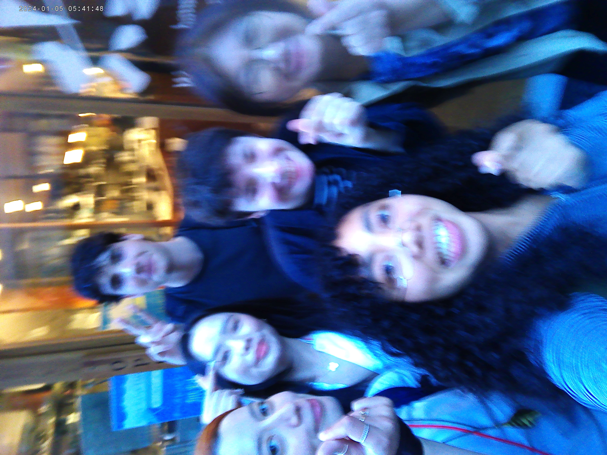

FUN DAY TODAY!
2026.04.28
Hello, blog! Today was another eat dinner with my schoolmates day. I notice this about myself: being alone causes me to mentally flip out.
SO ALONE!
I’ve never watched home alone before.
Yesterday was a semi-crashing out day. I tell you, my pre-period mind is CRAZY! Like, last night, I had the most grusome dream ever. I genuinely can’t explain it because the Japanese FBI would be busting through my door right now, but just know it was like a horror movie times ten. Maybe on the brink of a snuff film. I don’t even endulge in horror things, my mind just loves to shock me.
If you read my previous post, you can probably tell that I am sort of in a crazed space. During my pre-period phase, I usually get overly self-conscious, hungrier, dirtier. I’ve been brushing my teeth only once per day and not really cleaning my room and it all culminated into the soppy mess of yesterday’s post. Anyway, I was thinking about taking it down, but this space is so I can express all aspects of my being. It’s apart of me, apart of MAYASMIND!
MY CLASSMATES ARE SO CUTE pt.2
EX1.
I asked Lily-san (Taiwan, 66 y/o) why she’s studying Japanese and she responded “I love singing karaoke and I want to sing more karaoke.” I literally love her.
EX2.
Hanni-san (Korea, 50 y/o), invited me to Universal Studios next week. I am so excited because I was going to go by myself but now I have someone else to go with! And she reminds me of my auntie, Tita Z. They both love BTS too. Anyway, I really enjoy talking with her even though she doesn’t speak English. We speak in Japanese. It’s good practice.
EX3.
Now that Nhu-san is gone, I now sit next to Kou-san (China, 27 y/o) who is an interesting guy. Today, the sensei asked him and I to perform asking each other what we like. This is how it went down:
Me：コーさん、お酒が好きですか。(Kou-san, do you like to drink alcohol?)
Kou-san：はい、好きです。(Yes, I like to drink.)
Me：そうですね。いしょうに、お酒を飲みませんか？(I see… why don’t we drink alcohol together?)
Kou-san：はい、飲みましょう。(Yeah, let’s do it.)
Me: どんなお酒が好きですか？(What alcohol do you drink?)
Kou-san: オ。。。オレンジジュース。(O…orange juice.)
(everyone laughs. I can’t stop laughing. It was so funny.)
Me：お酒？(Alcohol?)
(The sensei corrected him)
Kou-san：オー。お酒が嫌いです。(Oh. I hate alcohol.)
Me (laughing)：あー。そうですか。さようなら。(I see… goodbye.)
OMG. I’ll never forget that!!!
EX4.
After class, Nhu wanted me to invite people to eat hamburg steak. I invited Emi-san, Hanni-san, Raffaele-san, and Jessica-san. We walked to the place where we found Nhu-san was sitting on this curb outside of the restaurant. While we greeted her, Emi-san said “It’s been a while! Do you want to eat with us?” I WAS LITERALLY DYING. She thought that we just happened to see Nhu sitting on this random curb in all of Osaka right outside of where we were going to eat. It was so funny.
Anyway blog, I’m fine today. I felt sort of body-conscious today but walking and eating いい foods make me feel genki! After we all ate, Hanni-san, Raffaele-san, and I walked to Honmachi station together. I like hanging around them. Tomorrow, I’m going to buy gifts for Nhu-san since she’s leaving next week and give Raffaele-san a curry bun. じゃね！

(everyone doing the Korean small hearts! also, if you're wondering why I wear those glasses, it's because I look cool.)